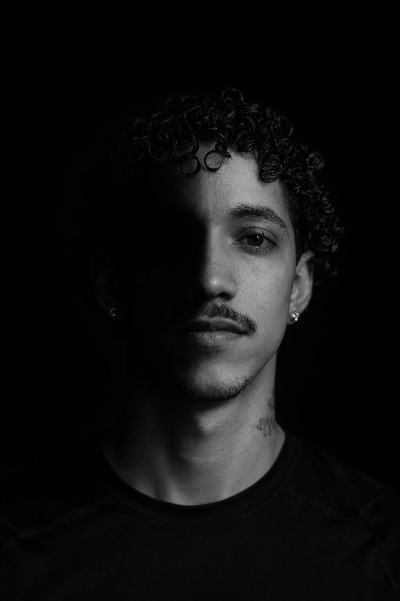

Barbeiro e educador · Porto
Suriano
Prever antes de executar.
QUEM SOU EU?
Suriano é barbeiro, educador e criador do Método SCULPT.
Através desta metodologia, ensina barbeiros a compreenderem o porquê de cada técnica, desenvolvendo uma visão mais estratégica e intencional na construção dos cortes.
O objetivo é fazer com que cada profissional compreenda a geometria, as formas e as elevações, tornando-se capaz de antecipar o resultado final antes mesmo de tocar no cabelo.
Atualmente vive em Portugal, onde é proprietário de uma barbearia no Porto, conciliando a prática profissional com a missão de elevar o nível técnico da barbearia através da educação.
Método SCULPT
Curso em breve